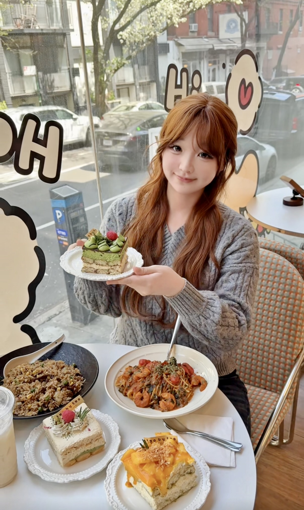

Food Reviews
I enjoy exploring restaurants and sharing food recommendations with my audience.
My social media content focuses on food, lifestyle, and study abroad life. I use Xiaohongshu and Douyin to share moments from my daily experiences.

I enjoy exploring restaurants and sharing food recommendations with my audience.
I document everyday moments as an international student, including school, friends, and city life.
This short video shows one of my food exploration experiences.